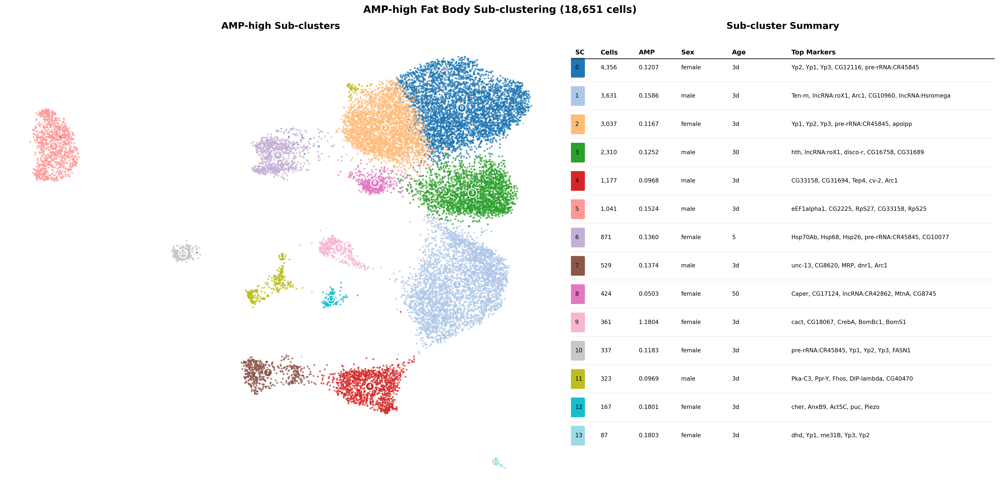
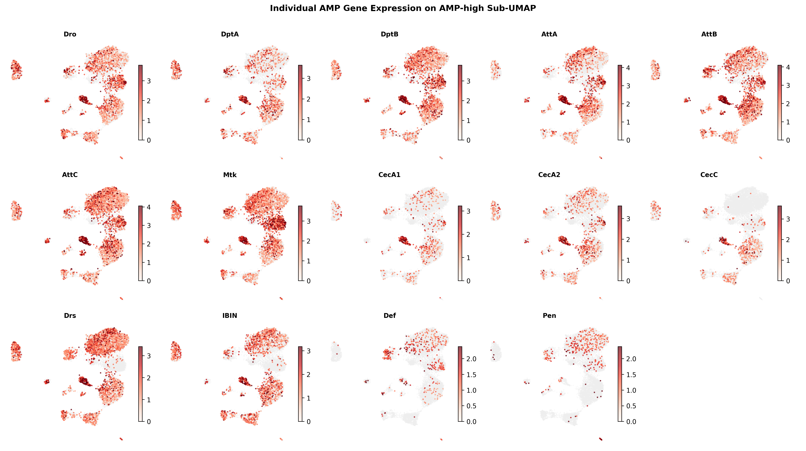
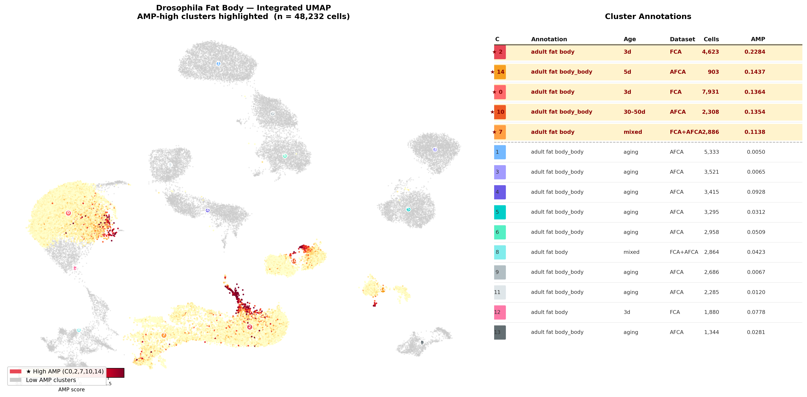
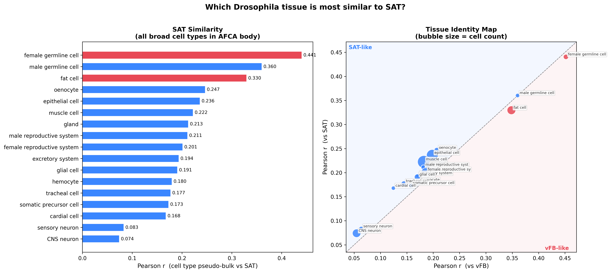
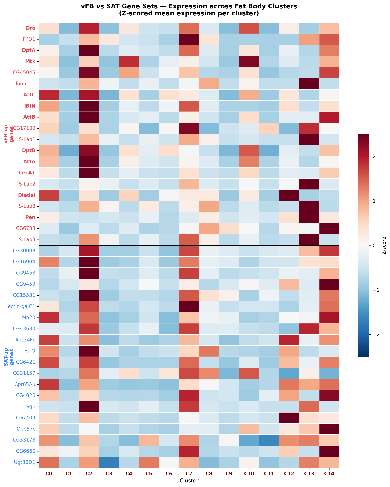
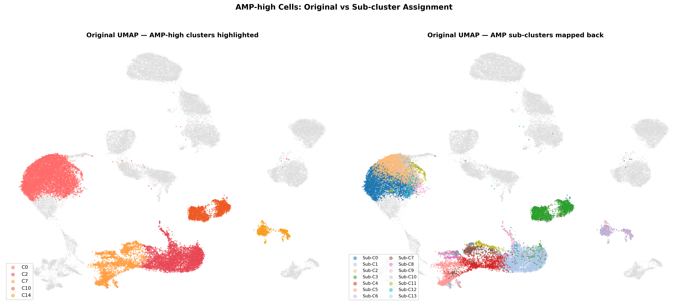

vFB vs SAT Distinguishing Gene Sets
Top 50 DEGs (padj < 0.05, |LFC| > 1) that distinguish vFB from SAT in bulk RNA-seq.
vFB-up Genes (top 20)
SAT-up Genes (top 20)

15 Leiden clusters resolved from integrated FCA + AFCA fat body data. No published study has resolved adult Drosophila fat body into subtypes by scRNA-seq — FCA (Li et al. 2022) and AFCA (Lu et al. 2023) both classified fat body as a single cell type.
Female: C0/C12 (3d, active) → C14 (5d, stressed) → C1/C11 (30d, lipogenic) → C9 (50d, metabolic) → C4 (50-70d, identity) → C6 (70d, senescent)
Male: C13 (5d, reproductive) → C2/C7 (3d, immune) → C3 (30d, metabolic) → C10 (30-50d, immune-primed) → C5 (50d, stressed)
Each cluster's pseudo-bulk profile correlated with bulk vFB and SAT RNA-seq (Pearson r). All clusters are vFB-like (expected: SC data is fat body).
Top 50 DEGs (padj < 0.05, |LFC| > 1) that distinguish vFB from SAT in bulk RNA-seq.
18,651 cells from AMP-high clusters (C0, C2, C7, C10, C14) re-clustered into 14 sub-populations.



361 cells (2% of AMP-high) with AMP score = 1.18 (10x higher than other sub-clusters). Toll pathway fully activated: cact, dl (Dorsal/NF-κB), Bomanin effectors (BomBc1, BomS1).



